Experimental investigation of fluorescence
methods for detecting lithium plating
on graphite anodes.
01 / Project Overview
Why detect lithium plating?
The Fast-Charging Bottleneck
Lithium-ion batteries face an important challenge
during fast charging: lithium ions may deposit as
metallic lithium on the graphite anode instead of
being stored within its structure. This phenomenon,
known as lithium plating, can accelerate battery
degradation and increase safety risks.
Understanding where lithium plating occurs is
therefore important for developing safer and more
reliable fast-charging batteries.
The Spatial Characterization Gap
Conventional electrochemical measurements
provide valuable information about battery
performance, but they do not directly show
where lithium deposits form across an electrode.
To address this limitation, Xu et al. (2025)
reported a fluorescence-based approach using
4′-hydroxychalcone (4-HC). The method exploits
differences in fluorescence response between
graphite and regions associated with metallic
lithium, offering a potential way to visualize
spatial variations across electrode surfaces.
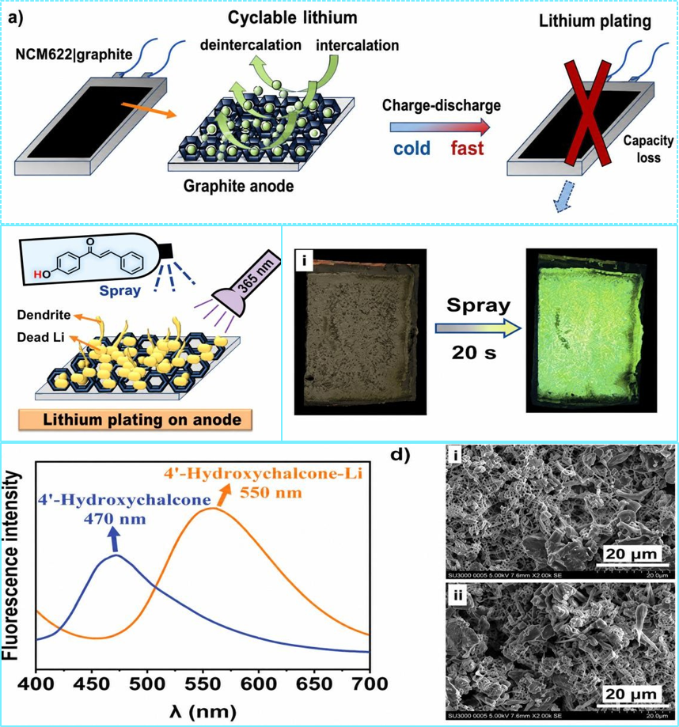
Figure 1 — Fluorescence-based approach for
investigating lithium plating.
Figure from Xu et al.,
Advanced Functional Materials,
35(2), 2412614 (2025).
Original publication
.
The CEA-Liten Objective
From Published Research to Experimental Practice
During my six-month internship at CEA-Liten,
our team investigated whether this
fluorescence-based approach could be
reproduced and adapted to the laboratory
environment.
Fluorescence spectroscopy:
Investigating the emission response of
reference and aged graphite electrodes.
Optical instrumentation:
Adapting an existing UV–sCMOS imaging setup
to acquire spatially resolved fluorescence
images.
Sample handling:
Preparing and protecting air-sensitive
electrodes for short-term optical
measurements outside the dry room.
The objective was to assess the method's
experimental feasibility and identify the
limitations that would need to be addressed
for further development.
02 / MY CONTRIBUTION & SCOPE
From Fluorescence Spectroscopy to Experimental Imaging
During my six-month internship at CEA-Liten,
I worked on adapting a published fluorescence-based
detection approach to the laboratory's experimental
conditions. The project brought together four
complementary areas of work, from understanding
the fluorescent marker to acquiring and exploring
images of electrode surfaces.
I investigated the fluorescence behavior
of 4'-hydroxychalcone (4-HC) using an
Edinburgh Instruments FLSP920
spectrofluorometer.
The study began with emission measurements
in solution at different concentrations,
followed by investigations on solid surfaces,
including copper, graphite, and
lithium-containing samples.
This work also involved adapting marker
preparation and handling procedures to
laboratory safety and inert-atmosphere
requirements.
02 / Optical Testbench Adaptation
I contributed to adapting an existing
optical setup for fluorescence imaging
of electrode surfaces.
The configuration combined
365 nm UV excitation,
a long-pass emission filter, a scientific
sCMOS camera, and a protected sample holder.
The challenge was to integrate these
elements for observing spatial fluorescence
contrast while limiting exposure of
sensitive samples to ambient air.
03 / Electrochemical Cycling & Sample Preparation
I worked on adapting electrochemical
cycling procedures from the literature
to investigate conditions associated
with lithium plating on graphite electrodes.
This involved electrochemical sample
studies and preparation for subsequent
post-mortem fluorescence characterization,
including controlled handling of
air-sensitive materials.
The objective was to connect fluorescence
investigations with representative battery
samples rather than relying exclusively
on preliminary marker tests.
I explored preliminary methods for
analyzing fluorescence images acquired
with the scientific camera.
Using Python and OpenCV,
I investigated dark-frame subtraction
and circular region-of-interest selection
to isolate electrode regions from
surrounding structures.
I also examined horizontal and vertical
fluorescence intensity profiles obtained
using the camera acquisition software.
This work was exploratory and did not
include validated quantitative ROI metrics
or absolute lithium mass measurements.
03 / EXPERIMENTAL APPROACH
Fluorescence Imaging Testbench
To investigate fluorescence-based lithium plating
detection, an existing optical setup was adapted
for imaging electrode surfaces under UV excitation.
The experimental configuration combined a
365 nm UV LED for excitation,
a 495 nm long-pass filter to
suppress reflected excitation light, and a
16-bit scientific sCMOS camera
(Thorlabs CS2100M) for fluorescence
image acquisition.
A hermetic sample holder with a quartz window
was used to limit exposure of air-sensitive
electrodes to ambient conditions during
optical measurements.
The setup enabled the acquisition of fluorescence
images for preliminary spatial analysis.
However, illumination uniformity and measurement
reproducibility remained important challenges
for further development.
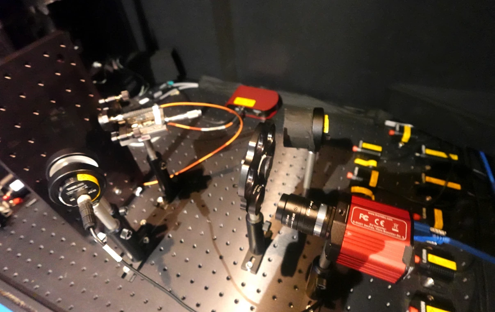
Figure 1. Experimental fluorescence imaging setup
integrating UV excitation, optical filtering,
an sCMOS camera and a fiber-optic probe.
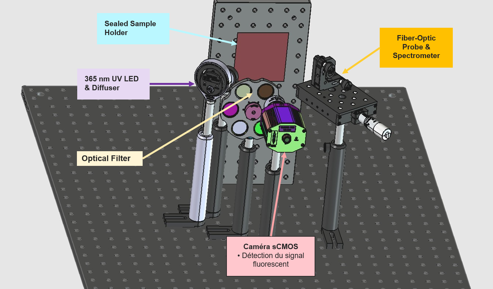
Figure 2. Optomechanical CAD Layout.
Preliminary CAD representation of the experimental
testbench, illustrating the arrangement of the
UV excitation source, imaging camera, protected
sample holder, and fiber-coupled compact
spectrometer for preliminary fluorescence checks.
The final configuration differed from this
initial layout.
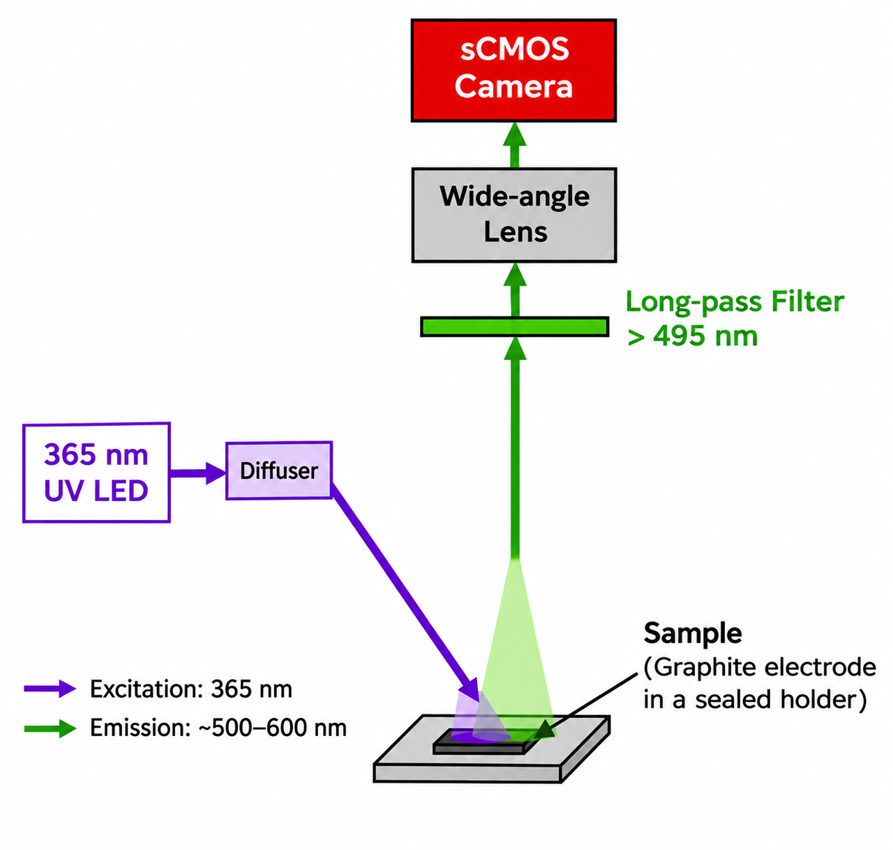
Figure 3. Fluorescence Imaging Schematic.
Simplified optical diagram showing 365 nm UV
excitation, an optical diffuser, a 495 nm
long-pass emission filter, and a scientific
sCMOS camera for recording spatial fluorescence
intensity distributions.
Protecting Air-Sensitive Samples
How could we observe lithium-containing
electrodes outside the dry room?
Metallic lithium is highly reactive with oxygen
and moisture. To limit exposure to ambient air,
the electrodes were handled under controlled
dry-room conditions and sealed in a sample
holder with quartz windows.
This arrangement allowed us to perform
short-term optical measurements outside
the dry room. However, the long-term
sealing performance was not evaluated.
Figure 4. Encapsulated Electrode Samples.
Sealed quartz-window holders used for
short-term fluorescence measurements.
04 / FLUORESCENCE RESULTS & IMAGE ANALYSIS
Fluorescence Results & Image Analysis
04.1 — Fluorescence Imaging
Can fluorescence imaging reveal spatial differences
across the electrode surface?
Six graphite electrode samples were treated with
the 4-HC fluorescent marker and sealed in
quartz-window holders.
A — Visual Inspection Under UV Light
Under visible light, the electrodes showed different
surface patterns. When illuminated with a UV lamp,
they exhibited green-yellow fluorescence with
noticeable variations across their surfaces.
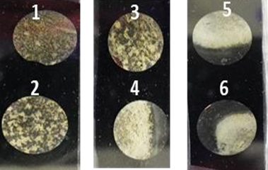
Figure 5. Six 4-HC-treated graphite electrodes
observed under visible light and UV illumination.
Sample positions correspond between both images.
B — Imaging with a Scientific sCMOS Camera
We used the adapted optical testbench to acquire
fluorescence images of the same six electrodes
with a 16-bit monochrome sCMOS camera and
a 495 nm long-pass filter.
The images revealed bright and dark regions
across the electrode surfaces, allowing us
to examine spatial differences in the
recorded fluorescence signal.
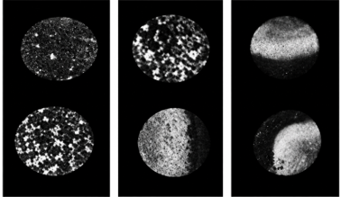
Figure 6. Fluorescence images acquired with
the sCMOS camera. The six samples follow
the same arrangement as in Figure 5.
Key finding:
Wide-field fluorescence imaging revealed
spatial contrast on aged graphite electrodes
exhibiting evidence of lithium plating.
However, the images were not calibrated
to measure the amount of deposited lithium.
04.2 — Fluorescence Spectroscopy
What did the fluorescence measurements reveal?
We used the FLSP920 spectrofluorometer to examine
the fluorescence response of the 4-HC marker
on graphite electrode samples.
A — Spectral Response
We compared the normalized fluorescence emission
spectra of 4-HC on a graphite reference and
a graphite electrode exhibiting lithium plating.
The emission peak appeared near 450 nm for
the graphite reference and around 525 nm
for the lithium-plated sample.
This shift toward longer wavelengths was
consistent with the behavior reported
in the literature.
Because the spectra were normalized and different
4-HC concentrations were used, this comparison
highlights peak positions rather than absolute
fluorescence intensities.
Figure 7. Normalized fluorescence emission spectra
of 4-HC on graphite (16 mg/mL) and graphite
exhibiting lithium plating (1 mg/mL).
Emission peaks occur near 450 nm and 525 nm.
B — Comparing Aged Electrode Samples
We also measured six aged graphite electrode
samples exhibiting evidence of lithium plating.
The photographs below show the samples and
the illuminated regions during fluorescence
spectroscopy measurements.
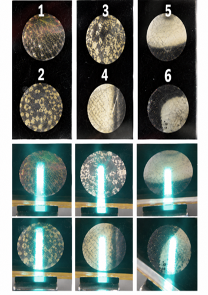
Figure 8. Six aged graphite electrode samples
and their appearance under excitation light
during fluorescence spectroscopy measurements.
All six samples showed a similar emission band
around 520–525 nm, but their fluorescence
intensities differed.
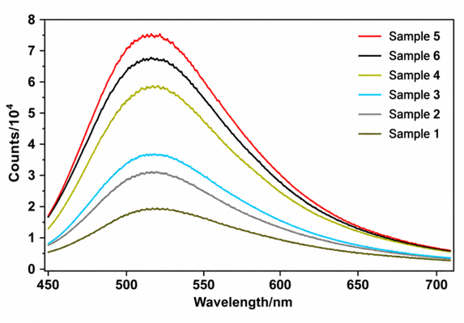
Figure 9. Fluorescence emission spectra
of six aged graphite electrodes, showing
similar emission bands with different
signal intensities.
By integrating the emission spectra,
we compared the relative optical response
of each sample under the same measurement
protocol.
Figure 10. Integrated fluorescence intensity
of the six electrode samples.
Values represent relative optical responses
and are not calibrated to deposited lithium mass.
Key finding:
The graphite reference and lithium-plated sample
showed different emission peaks. Measurements
on six aged electrodes also revealed differences
in fluorescence intensity, allowing a relative
comparison of their optical responses without
quantifying deposited lithium.
04.3 — Spatial Intensity Profiles
Horizontal and vertical intensity profiles were extracted using the camera acquisition software
to examine how the recorded fluorescence signal varied across selected regions of the electrode
surfaces.
The profiles revealed local intensity variations, providing a simple way to explore spatial
fluorescence contrast without performing quantitative lithium mapping.
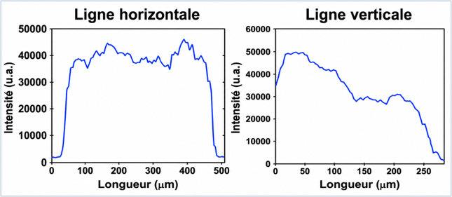
Fluorescence image and corresponding horizontal
and vertical intensity profiles extracted using
the camera acquisition software.
Spatial coordinates are shown as reported by
the software.
04.4 — Exploratory Image Processing
Preliminary image processing was performed
in Python, including dark-frame subtraction
and circular ROI selection to isolate
electrode regions from surrounding structures.
This work provided a basis for further
region-based analysis. Quantitative ROI
metrics were not evaluated.
01 / RAW ACQUISITION
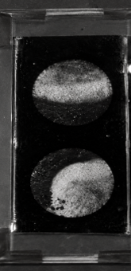
Fluorescence image acquired
with the sCMOS camera.
02 / PREPROCESSING
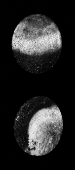
Dark-frame subtraction to correct
the detector baseline signal.
03 / ROI SELECTION
Circular ROI masking in Python
to isolate the electrode region.
05 / KEY TAKEAWAYS & CRITICAL ASSESSMENT
From Experimental Results to Future Development
A — Where We Got
During my six-month internship at CEA-Liten, we
brought together fluorescence spectroscopy,
optical imaging, and sample preparation to
evaluate a fluorescence-based method for
investigating lithium plating on graphite electrodes.
Fluorescence spectroscopy:
Using the Edinburgh Instruments FLSP920, we
observed emission peaks near 450 nm for the
graphite reference and 525 nm for a sample
exhibiting lithium plating. This approximately
75 nm shift was consistent with the behavior
reported in the literature.
Optical instrumentation:
We adapted an existing testbench using a
365 nm UV LED, a 495 nm long-pass filter,
and a 16-bit Thorlabs sCMOS camera.
The setup allowed us to acquire fluorescence
images showing spatial variations across
the electrode surfaces.
Sample protection:
We prepared and sealed air-sensitive electrodes
in quartz-window holders, allowing short-term
optical measurements outside the dry room.
Image analysis:
We examined horizontal and vertical intensity
profiles using the camera acquisition software.
In Python, I also explored dark-frame subtraction
and circular ROI masking to isolate electrode regions.
Together, these results showed that the experimental
approach could produce useful spectral and spatial
fluorescence information, while identifying the
improvements needed for more reliable measurements.
B — Critical Assessment
The experiments demonstrated measurable fluorescence
signals, but several limitations remained:
Chemical specificity:
Fluorescence alone could not confirm the
presence of metallic lithium.
Spectral interpretation:
Different 4-HC concentrations prevented
a direct attribution of the observed
spectral shift to lithium plating.
Reproducibility:
Marker deposition and UV illumination
were not yet fully controlled.
Quantification:
Fluorescence intensity was not calibrated
against deposited lithium mass.
These limitations guided the next steps toward
a more reliable optical characterization method.
C — Proposed Improvements
Based on the experimental results and the limitations identified,
I proposed four priorities for further development.
01 / CHEMICAL
Controlled Marker Deposition
Standardize 4-HC application to improve coating
consistency and measurement reproducibility.
Expand testing using a proposed 4 × 4 matrix
of charging rates and overcharge levels.
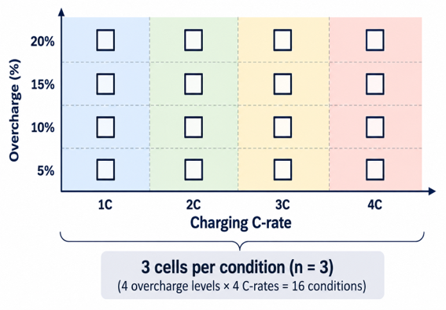
Proposed experimental matrix
03 / OPTICAL
Uniform UV Illumination
Improve illumination uniformity to obtain more
consistent fluorescence images across the electrode.
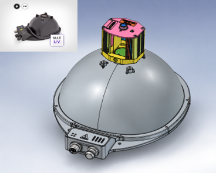
Conceptual illumination improvement
04 / DIGITAL
Automated Image Analysis
Develop reproducible batch processing and
investigate automated electrode segmentation.
Proposed automated processing
RESEARCH OUTCOME & FUTURE VISION
From Proof of Concept to Automated Optical Inspection
The main objective of my internship was to assess the
experimental feasibility of fluorescence-based detection
of lithium plating on graphite electrodes.
The work established an initial experimental approach
combining fluorescence spectroscopy, optical imaging,
and sample preparation. It also revealed key limitations
and helped define a technical roadmap for further development.
01Proof of ConceptInitial experimental feasibility